O que mudou quando falamos em IA?
Do autocomplete ao agente que executa uma tarefa inteira — e por que isso importa para uma reportagem.
O que exatamente queremos dizer quando falamos em IA?
Um modelo de linguagem lê o que veio antes e calcula quais palavras ou pedaços de palavra têm mais chance de vir depois. Repetindo isso muitas vezes, ele produz uma resposta.
Token é só o nome dado a esses pedaços de texto.
“Recompensa” quer dizer: dar um sinal de que uma resposta foi melhor
Tentativa
O modelo responde de dois jeitos.
Avaliação
Pessoas, modelos ou testes indicam qual funciona melhor.
Ajuste
O treinamento aumenta a chance de repetir a estratégia escolhida.
Para uma IA parecer “natural”, muita gente precisou fazer um trabalho difícil
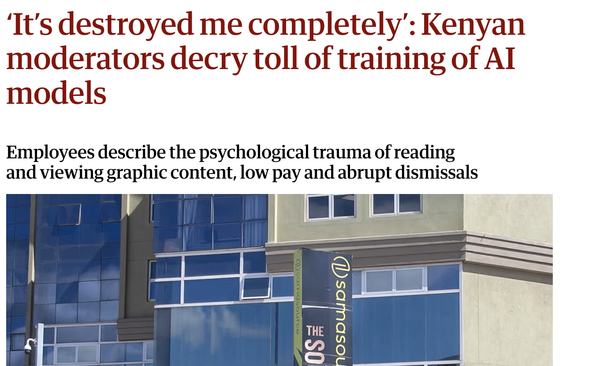
Moderadores no Quênia relataram baixo pagamento, demissões e o trauma de ler material gráfico para treinar modelos.
A BBC News Brasil também mostrou o trabalho invisível por trás do ChatGPT.
A “recompensa” do treinamento não cai do céu: pessoas rotulam exemplos, comparam respostas e ajudam a ensinar ao sistema o que parece útil, seguro ou adequado.
As palavras que você vai ouvir toda hora
Modelo
o sistema que gera a resposta
Contexto
o material disponível nesta tarefa
Multimodal
texto, imagem, áudio, vídeo ou código
Token
unidade que o modelo processa
Agente
planeja e executa etapas
Alucinação
resposta inventada ou sem sustentação
De responder perguntas a executar tarefas

Agentes combinam conversa, pesquisa e ação.
- ler e resumir
- transcrever e comparar
- pesquisar e cruzar fontes
- escrever código e protótipos
- usar ferramentas sob supervisão
A capacidade aumenta. A responsabilidade de decidir, verificar e publicar continua humana.
Por que toda semana parece haver uma novidade?
Laboratórios competem por modelos mais capazes, chips, dados, usuários e infraestrutura. A disputa não é apenas técnica: envolve dinheiro, energia, propriedade intelectual, trabalho e poder geopolítico.
- Mais escala: modelos maiores e mais caros de treinar.
- Mais eficiência: modelos menores, especializados e baratos de rodar.
- Mais ação: sistemas que deixam de só conversar e passam a usar ferramentas.
As pessoas já se informam com IA
Buscar informações é um dos usos mais comuns dos chatbots. Segundo o Reuters Institute, notícias atualizadas já fazem parte desse hábito.
Tráfego de busca para sites de notícias na rede global da Chartbeat.
O que os publishers dizem que vão priorizar em 2026.
é a expectativa de queda do tráfego vindo de buscadores em três anos.
esperam grande impacto de ferramentas agentic na indústria.
é a prioridade líquida para mais investigação original e reportagem de rua.
O relatório ouviu 280 líderes digitais em 51 países. Ler o relatório completo →
Quanto mais capacidade, maior a discussão sobre controle
Em setembro de 2026, Dario Amodei pediu que os laboratórios desacelerassem o avanço dos modelos para dar tempo a testes e medidas de segurança. Sam Altman e Elon Musk apoiaram publicamente a proposta.
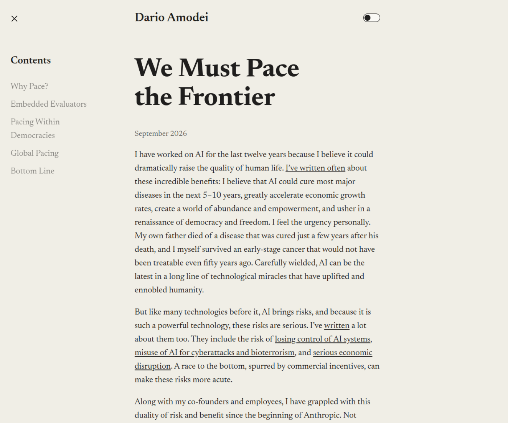
Dario Amodei: “We Must Pace the Frontier” · ler o texto original
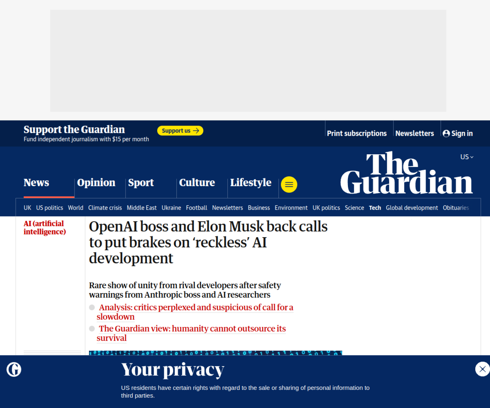
The Guardian: rivais da corrida da IA apoiam a desaceleração · ler a reportagem
Exemplos práticos
Como usar IA para descobrir pistas, encontrar fontes e investigar padrões.
Qual usar? Depende do trabalho
Conversa, pesquisa e fontes
- ChatGPT
- Claude
- Gemini
- Perplexity
- NotebookLM
Ambientes de trabalho e agentes
- ChatGPT Work e Claude Cowork
- Codex e Claude Code
- Gemini Spark
- Automação e APIs
- Planilhas, Python e dashboards com assistência de IA
A diferença importante não é só “qual responde melhor”: é se a ferramenta consegue ver as fontes, usar ferramentas, deixar rastros e permitir que você confira.
Encontrar informações que você nem sabia que existiam
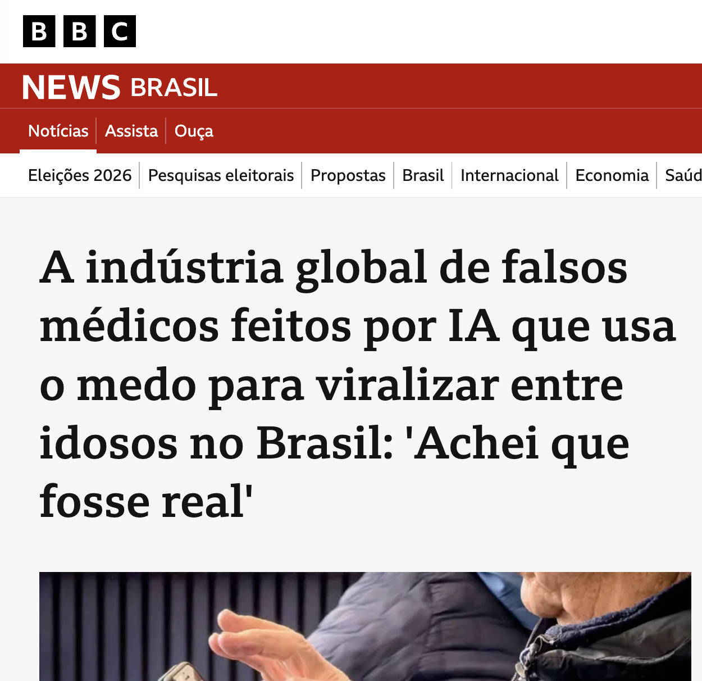
A entrevistada que estava entre mais de 2 mil comentários
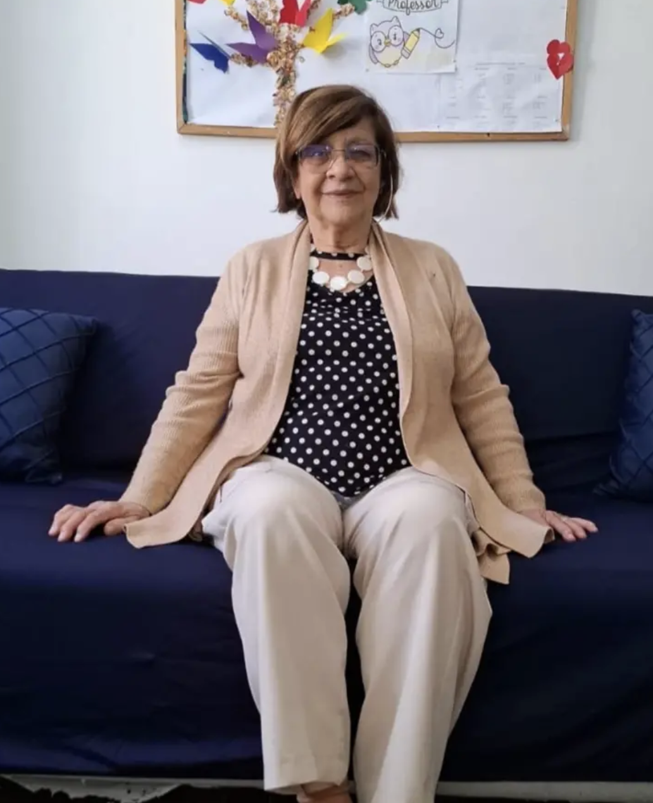
O prompt foi direto: ler os comentários do vídeo e identificar pessoas que disseram que seguiriam os conselhos do médico.
“Não me animei [com a orientação do oftalmologista], pois ainda vejo bem. Agora vou seguir sua orientação”, escreveu ela nos comentários do vídeo.
Quem está vendendo isso?
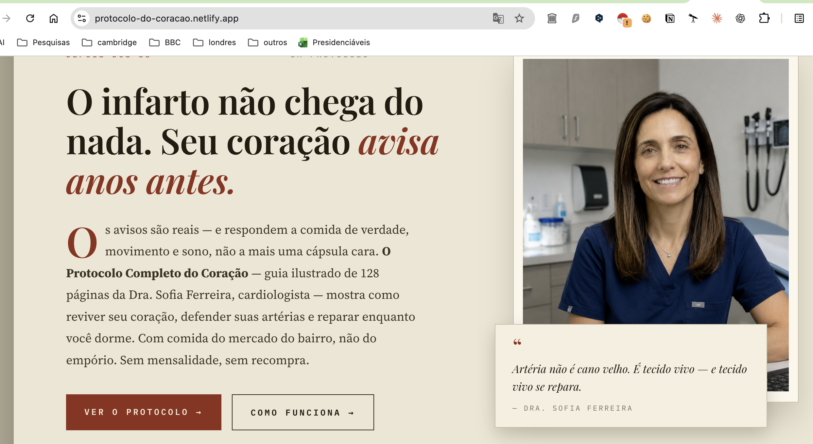
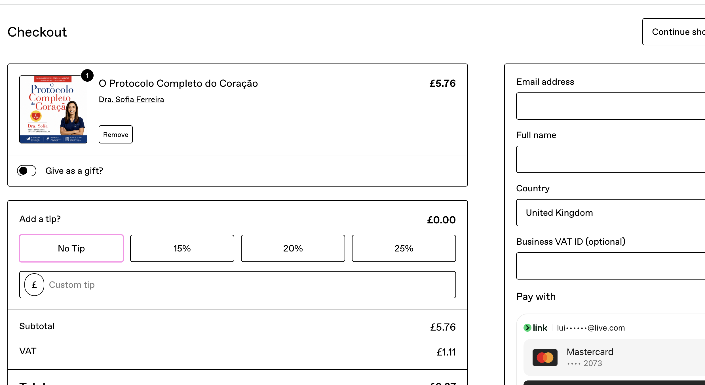
Perguntamos à IA: quem está vendendo isso?
A IA foi até o código-fonte da página e encontrou um e-mail de contato. Esse tipo de pista pode ser rechecado manualmente no HTML antes de virar uma fonte ou um contato jornalístico.
A IA também encontra padrões entre canais
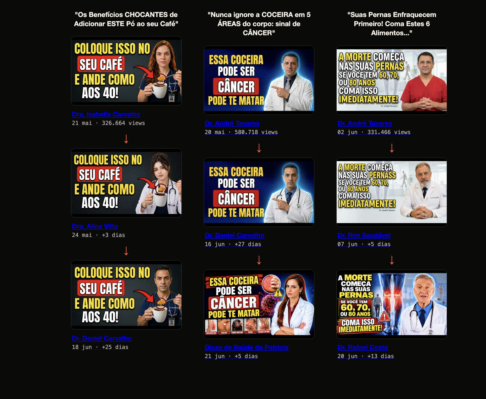
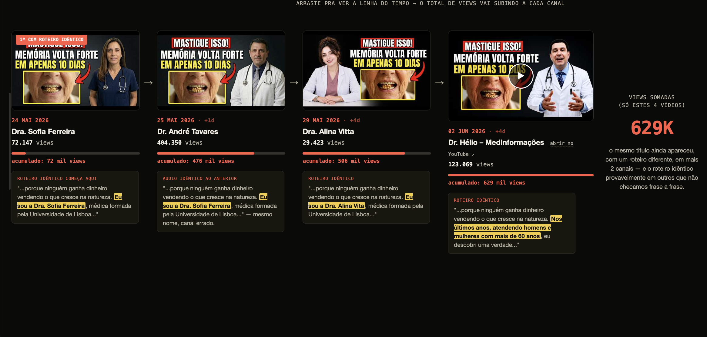
Pedimos à IA para procurar canais com títulos semelhantes e hashtags reproduzidas por vários canais — e também para quantificar o alcance.
- comparar títulos e miniaturas;
- agrupar hashtags recorrentes;
- encontrar novos canais;
- somar as visualizações e estimar o alcance acumulado.
Raspar comentários públicos do YouTube para descobrir pautas
A entrevistada do caso foi encontrada depois que a IA analisou mais de 2 mil comentários públicos de um vídeo.
- Coletar comentários públicos de vídeos relacionados ao tema.
- Usar IA para agrupar nomes, lugares, experiências e pistas recorrentes.
- Voltar aos comentários originais e procurar os personagens.
- Confirmar identidade, contexto e autorização antes de fazer contato.
Usar IA / Cobrir o universo da IA
Mesmo que você decida não usar essas ferramentas, compreendê-las pode ajudar a encontrar pautas. Suas fontes estarão usando IA; seus entrevistados também; e, eventualmente, alguém que você esteja investigando poderá estar usando-a.
- Usar IA: ganhar tempo, explorar documentos e criar protótipos com supervisão.
- Cobrir IA: investigar promessas, negócios, impactos, erros, trabalhadores, usuários e quem fica de fora.
- A pergunta jornalística: o que essa ferramenta mudou na vida de alguém — e quem pode provar?
A mesma capacidade pode ajudar — ou atrapalhar
Vantagens
- Economiza tempo em tarefas repetitivas.
- Ajuda a explorar grandes volumes de material.
- Facilita protótipos e novas linguagens.
- Amplia a capacidade de uma equipe pequena.
- Ensina caminhos técnicos que você pode reproduzir.
Riscos
- Alucinações e falsas fontes.
- Viés.
- Dependência de plataformas privadas.
- Desinformação, deepfakes e perda de confiança.
Quem ganha tempo? Quem paga a conta?
A IA pode baratear acesso a pesquisa e produção, mas seus benefícios não se distribuem automaticamente. Infraestrutura custa energia, água, chips e dinheiro; dados e trabalho humano também entram nessa conta.
- Ricos em recursos podem comprar modelos, dados, consultoria e tempo de revisão.
- Redações pequenas podem ganhar escala — ou ficar dependentes de serviços que mudam preço e regra.
- O custo invisível aparece em privacidade, autoria, empregos e confiança pública.
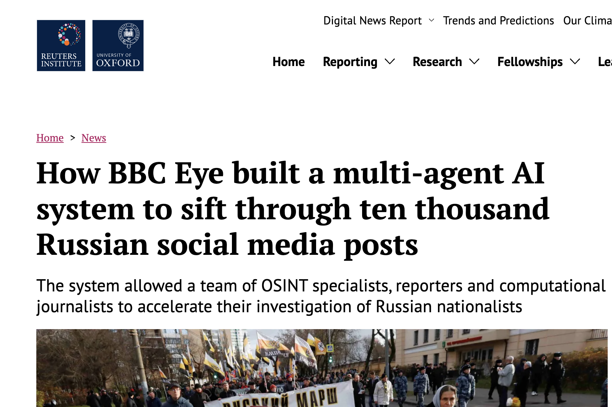
A IA pode fazer mais jornalismo — mas não decide o que importa
A BBC Eye, por exemplo, relatou o uso de um sistema multiagente para filtrar milhares de posts russos. A tecnologia acelera a triagem; especialistas e repórteres continuam responsáveis por contexto, confirmação e publicação.
VER RELATÓRIO E EXEMPLOSO caso Epstein Files
Como a IA pode ajudar a trabalhar com grandes bases de documentos.
IA para grandes bases de documentos (alô, Banco Master!)
O governo americano publicou uma quantidade enorme de documentos, organizados em páginas e arquivos difíceis de baixar e ler um a um. Para quem queria apurar, o primeiro obstáculo era encontrar um caminho navegável dentro do volume.

Print do site oficial do Departamento de Justiça dos EUA · abrir fonte

O Jmail reorganizou os e-mails numa interface parecida com Gmail · abrir Jmail
O que observar num agente trabalhando?
Agora entra o agente: acompanhe a tarefa, as ferramentas usadas, os passos e o resultado. O ponto é comparar o que ele encontrou com os documentos originais.
O agente entra, filtra e devolve tudo mastigado

No tutorial, observe o achado, a fonte e o ponto que ainda precisa de confirmação. Uma boa saída facilita a auditoria.


NotebookLM, o novo jeito (quase obrigatório) de pesquisar em muitos documentos ao mesmo tempo
Um caso concreto: usamos vídeos de entrevistas e podcasts para investigar a origem política de uma emenda que chegou a Juazeirinho.
Comece pelas fontes

Abra um notebook e clique em Adicionar fonte. O NotebookLM aceita PDFs, sites, documentos, textos, arquivos de áudio e URLs públicas do YouTube.
- Crie um notebook para uma pauta específica.
- Dê um nome que identifique a investigação.
Como mandar um vídeo do YouTube para o notebook
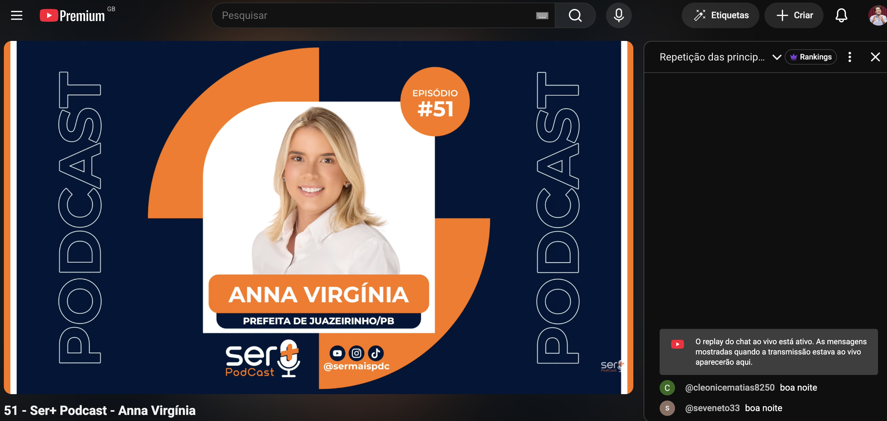
- Copie a URL de um vídeo público do YouTube.
- No notebook, clique em Adicionar fonte e escolha YouTube.
- Cole o endereço e confirme a importação.
- Espere a transcrição aparecer na lista de fontes.
Dá para puxar vários vídeos de um canal de uma vez
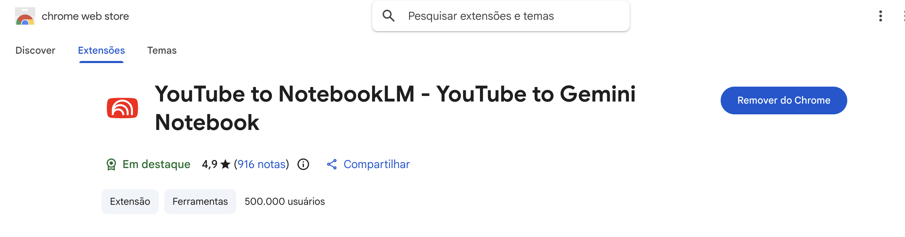
A extensão “YouTube to NotebookLM” adiciona um atalho para enviar vídeos ao notebook. Instale-a pela Chrome Web Store e use-a para montar rapidamente um conjunto de fontes.
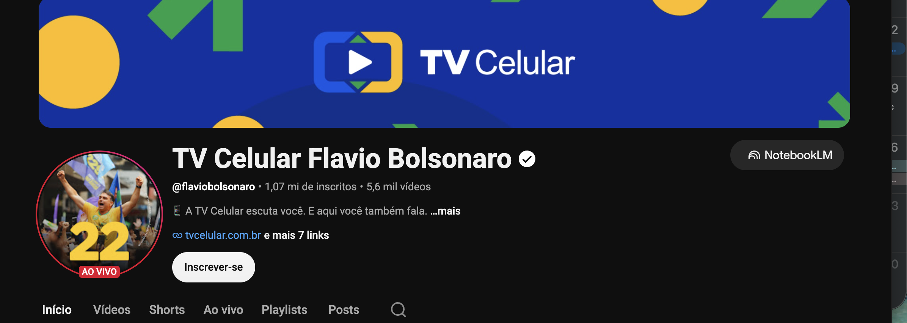
Onde clicar
Clique no botão NotebookLM que aparece no cabeçalho do canal. A partir dali, selecione os vídeos que quer transformar em fontes.
Para uma apuração, isso permite reunir entrevistas, podcasts e vídeos de um mesmo canal sem copiar cada URL manualmente — depois, o NotebookLM pesquisa as transcrições em conjunto.
Abrir a busca da extensão na Chrome Web Store →Achar uma informação simples em conteúdos (muito) longos
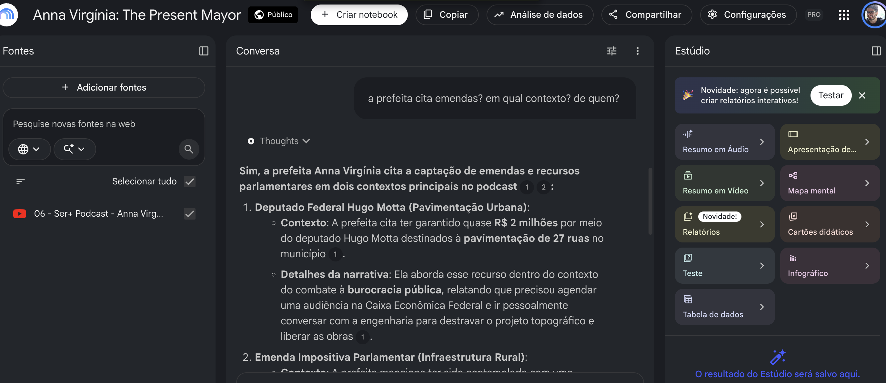
A pergunta
“A prefeita cita emendas? Em qual contexto? De quem?”
Como ler a resposta
O NotebookLM aponta a fonte e os trechos usados. Neste caso, indicou falas sobre quase R$ 2 milhões para pavimentação e a atribuição do recurso ao deputado Hugo Motta.
Clique nas citações, volte ao vídeo e confira antes de usar na reportagem.
Transcrever entrevistas e cruzar falas
- Adicione entrevistas, podcasts e vídeos de fontes diferentes.
- Peça a transcrição, os trechos sobre um termo e o contexto de cada fala.
- Compare versões: quem disse o quê, quando e sobre qual fato.
- Volte ao áudio ou vídeo original antes de publicar.
Outras funções do NotebookLM
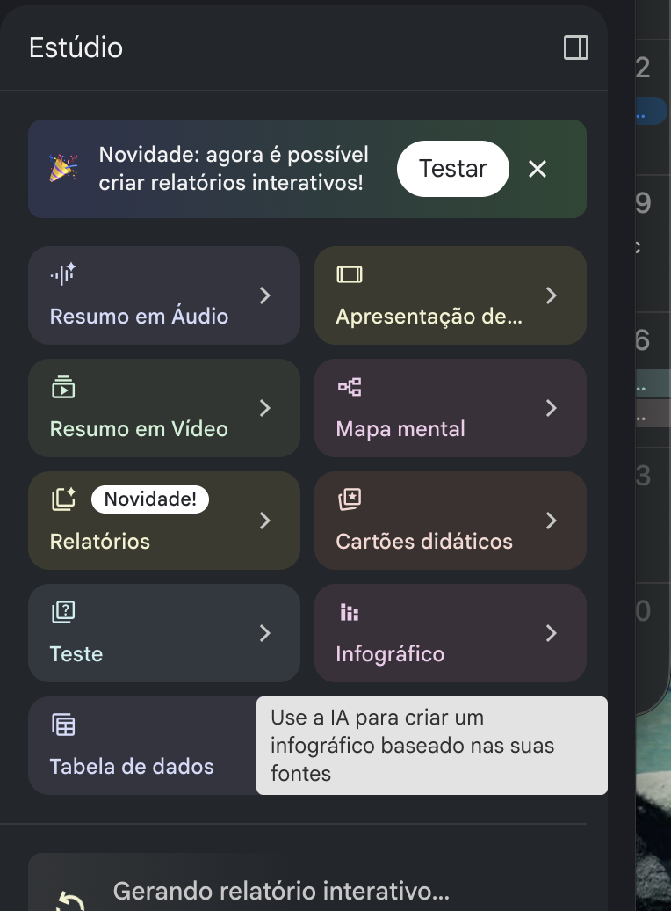
- Resumo em áudio e vídeo: ouvir ou assistir a uma síntese das fontes.
- Mapa mental: visualizar temas e conexões.
- Relatórios: organizar achados em briefing, guia ou outro formato.
- Infográfico, tabela e outros artefatos: criar saídas para explorar e revisar.
Esses formatos ajudam a explorar o material, mas não substituem a leitura das fontes nem a checagem jornalística.
A pergunta era: quem articulou a emenda?
Hugo Motta e Anna Virgínia
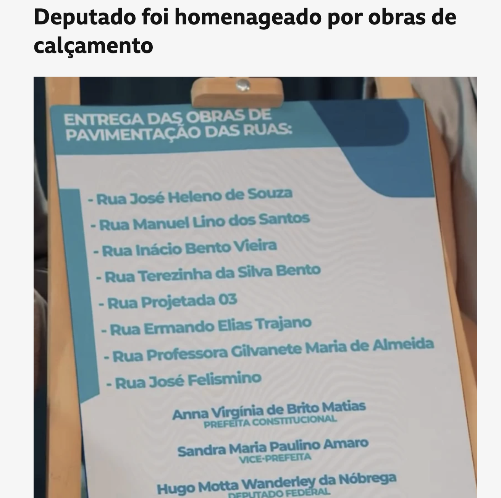
Placa de entrega das obras
A reportagem investigava como uma emenda parlamentar apoiada por Hugo Motta foi parar em uma obra de pavimentação em Juazeirinho (PB).
Além de documentos oficiais, havia entrevistas e podcasts em vídeo com a prefeita Anna Virgínia. O desafio era localizar, em horas de fala, cada menção a “emenda” e entender o contexto.
LER MATÉRIAO que é um agente de IA?
Um programa que recebe uma tarefa em linguagem natural — como "leia estes 500 PDFs e me diga quem aparece mais de uma vez" — e executa sozinho, passo a passo, sem que você precise programar nada.
- Codex (OpenAI) — roda no navegador, dentro do ChatGPT. Raspa sites, analisa documentos em lote e cruza informações
- Claude Code (Anthropic) — roda no navegador, no terminal ou na nuvem. Leitura de documentos longos, apuração assistida e automação
- Ambos funcionam da mesma forma: você descreve a tarefa em português e o agente escreve e executa o código sozinho. Não precisa saber programar
Achar dados para reportagens

Aluno pobre tem só 0,16% de chance de estar entre os melhores do Enem

Os 2,8 mil candidatos multados por danos ao meio ambiente

Empresários do mercado imobiliário são metade dos 50 maiores doadores

‘Turismo de Instagram’ aumenta violações ambientais em Fernando de Noronha

Trabalho escravo: como produto de mão de obra escrava vai parar na sua calçada

Como emenda apoiada por Hugo Motta foi parar em obra com produto de trabalho escravo

Candidatos que usam propostas idênticas em planos de governo
"Nada se cria, tudo se copia", diz autor de plano.
LER MATÉRIACom IA ficou possível automatizar o mesmo levantamento
Essa reportagem foi feita nas eleições de 2024. Em 2026, com IA, eu consegui reproduzir o mesmo levantamento em alguns segundos — mas eu precisei desenvolver, antes, o método para fazer isso.

Quando a resposta não está na internet
A IA também pode ajudar a descobrir como pedir uma informação pública — e a quem pedir.
Peça ajuda para formular a pergunta certa
- Explique o que você quer descobrir e deixe a IA sugerir termos de busca.
- Peça que ela identifique qual órgão provavelmente guarda o dado.
- Compare pedidos semelhantes e veja como outras pessoas formularam a solicitação.
- Use a IA para revisar clareza, período, formato e unidade responsável — sem inventar a base legal.
Antes de escrever, pesquise quem já perguntou

Um fluxo que você consegue repetir
1 · Descobrir
- Busque pedidos semelhantes.
- Note órgão, período e formato.
- Abra a resposta e confira o que foi entregue.
2 · Redigir
- Peça à IA uma versão objetiva.
- Revise você mesmo a pergunta.
- Solicite planilha, PDF ou série histórica quando necessário.